Install required R packages
# # Install the remotes package
# if (!requireNamespace("remotes", quietly = TRUE)) {
# install.packages("remotes")
# }
# # Install Seurat
# if (!requireNamespace("Seurat", quietly = TRUE)) {
# remotes::install_github("satijalab/seurat", "seurat5", quiet = TRUE)
# }
# # Install BiocManager
# if (!require("BiocManager", quietly = TRUE))
# install.packages("BiocManager")
# # Install SingleR package
# if (!require("hdf5r", quietly = TRUE)){
# BiocManager::install("hdf5r")
# }
# # Install SingleR package
# if (!require("presto", quietly = TRUE)){
# remotes::install_github("immunogenomics/presto")
# }
# # Install SingleR package
# if (!require("SingleR", quietly = TRUE)){
# BiocManager::install("SingleR")
# }
# if (!require("celldex", quietly = TRUE)){
# BiocManager::install("celldex")
# }
# if (!require("SingleCellExperiment", quietly = TRUE)){
# BiocManager::install("SingleCellExperiment")
# }
# if (!require("scater", quietly = TRUE)){
# BiocManager::install("scater")
# }
## Installing the R packages could take around 51 minutes
## To speed up this process, you can download the R lib files
## saved from a working Google Colab session
## https://drive.google.com/file/d/1eN-Raj3Hlnml68ACZQ36VQRGZxFclneL/view?usp=sharing
system("gdown 1eN-Raj3Hlnml68ACZQ36VQRGZxFclneL", intern = TRUE)
system("md5sum BIOI611_custom_R_lib_Nov_2025.tar.gz", intern = TRUE)
'fcfbd50c028468ec37d8654fda0eaec6 BIOI611_custom_R_lib_Nov_2025.tar.gz'
## required by scater package
system("apt-get install libx11-dev libcairo2-dev", intern = TRUE)
system("tar zxvf BIOI611_custom_R_lib_Nov_2025.tar.gz")
- 'Reading package lists...'
- 'Building dependency tree...'
- 'Reading state information...'
- 'libcairo2-dev is already the newest version (1.16.0-5ubuntu2).'
- 'libx11-dev is already the newest version (2:1.7.5-1ubuntu0.3).'
- 'libx11-dev set to manually installed.'
- '0 upgraded, 0 newly installed, 0 to remove and 41 not upgraded.'
.libPaths(c("/content/usr/local/lib/R/site-library", .libPaths()))
.libPaths()
- '/content/usr/local/lib/R/site-library'
- '/usr/local/lib/R/site-library'
- '/usr/lib/R/site-library'
- '/usr/lib/R/library'
Load required R packages
library(Seurat)
library(dplyr)
library(SingleR)
library(celldex)
library(scater)
library(SingleCellExperiment)
Loading required package: SeuratObject
Loading required package: sp
Attaching package: ‘SeuratObject’
The following objects are masked from ‘package:base’:
intersect, t
Attaching package: ‘dplyr’
The following objects are masked from ‘package:stats’:
filter, lag
The following objects are masked from ‘package:base’:
intersect, setdiff, setequal, union
Loading required package: SummarizedExperiment
Loading required package: MatrixGenerics
Loading required package: matrixStats
Attaching package: ‘matrixStats’
The following object is masked from ‘package:dplyr’:
count
Attaching package: ‘MatrixGenerics’
The following objects are masked from ‘package:matrixStats’:
colAlls, colAnyNAs, colAnys, colAvgsPerRowSet, colCollapse,
colCounts, colCummaxs, colCummins, colCumprods, colCumsums,
colDiffs, colIQRDiffs, colIQRs, colLogSumExps, colMadDiffs,
colMads, colMaxs, colMeans2, colMedians, colMins, colOrderStats,
colProds, colQuantiles, colRanges, colRanks, colSdDiffs, colSds,
colSums2, colTabulates, colVarDiffs, colVars, colWeightedMads,
colWeightedMeans, colWeightedMedians, colWeightedSds,
colWeightedVars, rowAlls, rowAnyNAs, rowAnys, rowAvgsPerColSet,
rowCollapse, rowCounts, rowCummaxs, rowCummins, rowCumprods,
rowCumsums, rowDiffs, rowIQRDiffs, rowIQRs, rowLogSumExps,
rowMadDiffs, rowMads, rowMaxs, rowMeans2, rowMedians, rowMins,
rowOrderStats, rowProds, rowQuantiles, rowRanges, rowRanks,
rowSdDiffs, rowSds, rowSums2, rowTabulates, rowVarDiffs, rowVars,
rowWeightedMads, rowWeightedMeans, rowWeightedMedians,
rowWeightedSds, rowWeightedVars
Loading required package: GenomicRanges
Loading required package: stats4
Loading required package: BiocGenerics
Loading required package: generics
Attaching package: ‘generics’
The following object is masked from ‘package:dplyr’:
explain
The following objects are masked from ‘package:base’:
as.difftime, as.factor, as.ordered, intersect, is.element, setdiff,
setequal, union
Attaching package: ‘BiocGenerics’
The following object is masked from ‘package:dplyr’:
combine
The following objects are masked from ‘package:stats’:
IQR, mad, sd, var, xtabs
The following objects are masked from ‘package:base’:
anyDuplicated, aperm, append, as.data.frame, basename, cbind,
colnames, dirname, do.call, duplicated, eval, evalq, Filter, Find,
get, grep, grepl, is.unsorted, lapply, Map, mapply, match, mget,
order, paste, pmax, pmax.int, pmin, pmin.int, Position, rank,
rbind, Reduce, rownames, sapply, saveRDS, table, tapply, unique,
unsplit, which.max, which.min
Loading required package: S4Vectors
Attaching package: ‘S4Vectors’
The following objects are masked from ‘package:dplyr’:
first, rename
The following object is masked from ‘package:utils’:
findMatches
The following objects are masked from ‘package:base’:
expand.grid, I, unname
Loading required package: IRanges
Attaching package: ‘IRanges’
The following objects are masked from ‘package:dplyr’:
collapse, desc, slice
The following object is masked from ‘package:sp’:
%over%
Loading required package: Seqinfo
Loading required package: Biobase
Welcome to Bioconductor
Vignettes contain introductory material; view with
'browseVignettes()'. To cite Bioconductor, see
'citation("Biobase")', and for packages 'citation("pkgname")'.
Attaching package: ‘Biobase’
The following object is masked from ‘package:MatrixGenerics’:
rowMedians
The following objects are masked from ‘package:matrixStats’:
anyMissing, rowMedians
Attaching package: ‘SummarizedExperiment’
The following object is masked from ‘package:Seurat’:
Assays
The following object is masked from ‘package:SeuratObject’:
Assays
Attaching package: ‘celldex’
The following objects are masked from ‘package:SingleR’:
BlueprintEncodeData, DatabaseImmuneCellExpressionData,
HumanPrimaryCellAtlasData, ImmGenData, MonacoImmuneData,
MouseRNAseqData, NovershternHematopoieticData
Loading required package: SingleCellExperiment
Loading required package: scuttle
Loading required package: ggplot2
list.files()
- 'BIOI611_custom_R_lib_Nov_2025.tar.gz'
- 'sample_data'
- 'sessionInfo.txt'
- 'usr'
# https://drive.google.com/file/d/1-CvmcLvKMYW-OcLuGfFuGQMK2b5_VMFk/view?usp=drive_link
# Download "filtered_feature_bc_matrix.h5"
# Output of cellranger
system("gdown 1-CvmcLvKMYW-OcLuGfFuGQMK2b5_VMFk", intern = TRUE)
system("md5sum filtered_feature_bc_matrix.h5", intern = TRUE)
'360fc0760ebb9e6dd253d808a427b20d filtered_feature_bc_matrix.h5'
count_mtx_scrna <- Read10X_h5("filtered_feature_bc_matrix.h5")
# If you have the filtered_feature_bc_matrix/ folder, you can use
# Read10X to create 'count_mtx_scrna'
# system("mkdir filtered_feature_bc_matrix/; mv filtered_feature_bc_matrix.zip filtered_feature_bc_matrix")
# system("cd filtered_feature_bc_matrix; unzip filtered_feature_bc_matrix.zip")
# count_mtx_scrna <- Read10X("filtered_feature_bc_matrix/")
class(count_mtx_scrna)
'dgCMatrix'
The dgCMatrix class is a specific data structure in R's Matrix package, designed to store sparse matrices in a memory-efficient format. Sparse matrices are those with many zeros, making them ideal for high-dimensional data in applications like bioinformatics, where gene expression matrices often contain a lot of zeroes.
Why Use dgCMatrix?
- Memory Efficiency: Storing only non-zero values saves memory, especially in high-dimensional matrices.
- Computational Speed: Some operations on sparse matrices can be faster, as computations are limited to non-zero entries.
print(format(object.size(count_mtx_scrna), units = "MB"))
[1] "168.7 Mb"
# Check a few genes in the first 20 cells
count_mtx_scrna[c("CD3D", "TCL1A", "MS4A1"), 100:140]
[[ suppressing 41 column names ‘AACCATGCACTCAAGT-1’, ‘AACCATGGTAGCTTGT-1’, ‘AACCATGTCAATCCGA-1’ ... ]]
3 x 41 sparse Matrix of class "dgCMatrix"
CD3D 8 1 . . . 3 . 2 10 . 3 . . . 2 7 1 . . . 1 1 . 8 . . 2 4 . . . 12 11 .
TCL1A . . . . . . 6 . . . . . . . . . . . . . . . 10 . . . . . . . . . . .
MS4A1 . . . . . . 9 . . 16 . . . . . . . . . . . . 5 . . . . . . . . . . .
CD3D . 5 . . . 3 .
TCL1A . . . . . . .
MS4A1 20 . . . 39 . .
# non-normalized da# Initialize the Seurat object with the raw count matrix
pbmc <- CreateSeuratObject(counts = count_mtx_scrna,
project = "pbmc5k",
min.cells = 3, min.features = 200)
pbmc
An object of class Seurat
24785 features across 4884 samples within 1 assay
Active assay: RNA (24785 features, 0 variable features)
1 layer present: counts
Understand Seurat object
Seurat slots https://github.com/satijalab/seurat/wiki/seurat
str(pbmc)
Formal class 'Seurat' [package "SeuratObject"] with 13 slots
..@ assays :List of 1
.. ..$ RNA:Formal class 'Assay5' [package "SeuratObject"] with 8 slots
.. .. .. ..@ layers :List of 1
.. .. .. .. ..$ counts:Formal class 'dgCMatrix' [package "Matrix"] with 6 slots
.. .. .. .. .. .. ..@ i : int [1:14449622] 6 17 42 62 79 83 85 94 100 109 ...
.. .. .. .. .. .. ..@ p : int [1:4885] 0 3378 5344 5581 8581 10897 13921 16902 20299 22669 ...
.. .. .. .. .. .. ..@ Dim : int [1:2] 24785 4884
.. .. .. .. .. .. ..@ Dimnames:List of 2
.. .. .. .. .. .. .. ..$ : NULL
.. .. .. .. .. .. .. ..$ : NULL
.. .. .. .. .. .. ..@ x : num [1:14449622] 1 1 4 1 1 2 1 1 1 1 ...
.. .. .. .. .. .. ..@ factors : list()
.. .. .. ..@ cells :Formal class 'LogMap' [package "SeuratObject"] with 1 slot
.. .. .. .. .. ..@ .Data: logi [1:4884, 1] TRUE TRUE TRUE TRUE TRUE TRUE ...
.. .. .. .. .. .. ..- attr(*, "dimnames")=List of 2
.. .. .. .. .. .. .. ..$ : chr [1:4884] "AAACCCATCAGATGCT-1" "AAACGAAAGTGCTACT-1" "AAACGAAGTCGTAATC-1" "AAACGAAGTTGCCAAT-1" ...
.. .. .. .. .. .. .. ..$ : chr "counts"
.. .. .. .. .. ..$ dim : int [1:2] 4884 1
.. .. .. .. .. ..$ dimnames:List of 2
.. .. .. .. .. .. ..$ : chr [1:4884] "AAACCCATCAGATGCT-1" "AAACGAAAGTGCTACT-1" "AAACGAAGTCGTAATC-1" "AAACGAAGTTGCCAAT-1" ...
.. .. .. .. .. .. ..$ : chr "counts"
.. .. .. ..@ features :Formal class 'LogMap' [package "SeuratObject"] with 1 slot
.. .. .. .. .. ..@ .Data: logi [1:24785, 1] TRUE TRUE TRUE TRUE TRUE TRUE ...
.. .. .. .. .. .. ..- attr(*, "dimnames")=List of 2
.. .. .. .. .. .. .. ..$ : chr [1:24785] "ENSG00000238009" "ENSG00000241860" "ENSG00000290385" "ENSG00000291215" ...
.. .. .. .. .. .. .. ..$ : chr "counts"
.. .. .. .. .. ..$ dim : int [1:2] 24785 1
.. .. .. .. .. ..$ dimnames:List of 2
.. .. .. .. .. .. ..$ : chr [1:24785] "ENSG00000238009" "ENSG00000241860" "ENSG00000290385" "ENSG00000291215" ...
.. .. .. .. .. .. ..$ : chr "counts"
.. .. .. ..@ default : int 1
.. .. .. ..@ assay.orig: chr(0)
.. .. .. ..@ meta.data :'data.frame': 24785 obs. of 0 variables
.. .. .. ..@ misc :List of 1
.. .. .. .. ..$ calcN: logi TRUE
.. .. .. ..@ key : chr "rna_"
..@ meta.data :'data.frame': 4884 obs. of 3 variables:
.. ..$ orig.ident : Factor w/ 1 level "pbmc5k": 1 1 1 1 1 1 1 1 1 1 ...
.. ..$ nCount_RNA : num [1:4884] 11578 5655 14728 10903 6174 ...
.. ..$ nFeature_RNA: int [1:4884] 3378 1966 237 3000 2316 3024 2981 3397 2370 2811 ...
..@ active.assay: chr "RNA"
..@ active.ident: Factor w/ 1 level "pbmc5k": 1 1 1 1 1 1 1 1 1 1 ...
.. ..- attr(*, "names")= chr [1:4884] "AAACCCATCAGATGCT-1" "AAACGAAAGTGCTACT-1" "AAACGAAGTCGTAATC-1" "AAACGAAGTTGCCAAT-1" ...
..@ graphs : list()
..@ neighbors : list()
..@ reductions : list()
..@ images : list()
..@ project.name: chr "pbmc5k"
..@ misc : list()
..@ version :Classes 'package_version', 'numeric_version' hidden list of 1
.. ..$ : int [1:3] 5 2 0
..@ commands : list()
..@ tools : list()
slotNames(pbmc)
- 'assays'
- 'meta.data'
- 'active.assay'
- 'active.ident'
- 'graphs'
- 'neighbors'
- 'reductions'
- 'images'
- 'project.name'
- 'misc'
- 'version'
- 'commands'
- 'tools'
Access Seurat object
pbmc@active.assay
'RNA'
class(pbmc@meta.data)
head(pbmc@meta.data, 4)
'data.frame'
| orig.ident | nCount_RNA | nFeature_RNA | |
|---|---|---|---|
| <fct> | <dbl> | <int> | |
| AAACCCATCAGATGCT-1 | pbmc5k | 11578 | 3378 |
| AAACGAAAGTGCTACT-1 | pbmc5k | 5655 | 1966 |
| AAACGAAGTCGTAATC-1 | pbmc5k | 14728 | 237 |
| AAACGAAGTTGCCAAT-1 | pbmc5k | 10903 | 3000 |
colSums(pbmc@assays$RNA$counts)[1:3]
- AAACCCATCAGATGCT-1
- 11578
- AAACGAAAGTGCTACT-1
- 5655
- AAACGAAGTCGTAATC-1
- 14728
Layers(pbmc)
'counts'
Data preprocessing
# Use $ operator to add columns to object metadata.
pbmc$percent.mt <- PercentageFeatureSet(pbmc,
pattern = "^MT-")
colnames(pbmc@meta.data)
- 'orig.ident'
- 'nCount_RNA'
- 'nFeature_RNA'
- 'percent.mt'
head(pbmc, 4)
| orig.ident | nCount_RNA | nFeature_RNA | percent.mt | |
|---|---|---|---|---|
| <fct> | <dbl> | <int> | <dbl> | |
| AAACCCATCAGATGCT-1 | pbmc5k | 11578 | 3378 | 3.62756953 |
| AAACGAAAGTGCTACT-1 | pbmc5k | 5655 | 1966 | 4.29708223 |
| AAACGAAGTCGTAATC-1 | pbmc5k | 14728 | 237 | 0.02715915 |
| AAACGAAGTTGCCAAT-1 | pbmc5k | 10903 | 3000 | 4.89773457 |
pbmc
An object of class Seurat
24785 features across 4884 samples within 1 assay
Active assay: RNA (24785 features, 0 variable features)
1 layer present: counts
NewVlnPlot <- function(seurat_obj, col = 3){
# Use violin plot to visualize QC metrics
tem_plots <- VlnPlot(
seurat_obj,
features = c("nFeature_RNA", "nCount_RNA", "percent.mt"),
combine = FALSE # return list of ggplot objects
)
# Apply theme to each plot
tem_plots <- lapply(tem_plots, function(x) x + NoLegend()) # OR + theme_bw()
# Combine again
patchwork::wrap_plots(tem_plots, ncol = 3)
}
# VlnPlot(
# pbmc,
# features = c("nFeature_RNA", "nCount_RNA", "percent.mt"),
# col = 3
# )
NewVlnPlot(pbmc, col = 3)
Warning message:
“Default search for "data" layer in "RNA" assay yielded no results; utilizing "counts" layer instead.”
Warning message:
“[1m[22mThe `slot` argument of `FetchData()` is deprecated as of SeuratObject 5.0.0.
[36mℹ[39m Please use the `layer` argument instead.
[36mℹ[39m The deprecated feature was likely used in the [34mSeurat[39m package.
Please report the issue at [3m[34m<https://github.com/satijalab/seurat/issues>[39m[23m.”
Warning message:
“[1m[22m`PackageCheck()` was deprecated in SeuratObject 5.0.0.
[36mℹ[39m Please use `rlang::check_installed()` instead.
[36mℹ[39m The deprecated feature was likely used in the [34mSeurat[39m package.
Please report the issue at [3m[34m<https://github.com/satijalab/seurat/issues>[39m[23m.”
Warning message:
“[1m[22m`aes_string()` was deprecated in ggplot2 3.0.0.
[36mℹ[39m Please use tidy evaluation idioms with `aes()`.
[36mℹ[39m See also `vignette("ggplot2-in-packages")` for more information.
[36mℹ[39m The deprecated feature was likely used in the [34mSeurat[39m package.
Please report the issue at [3m[34m<https://github.com/satijalab/seurat/issues>[39m[23m.”
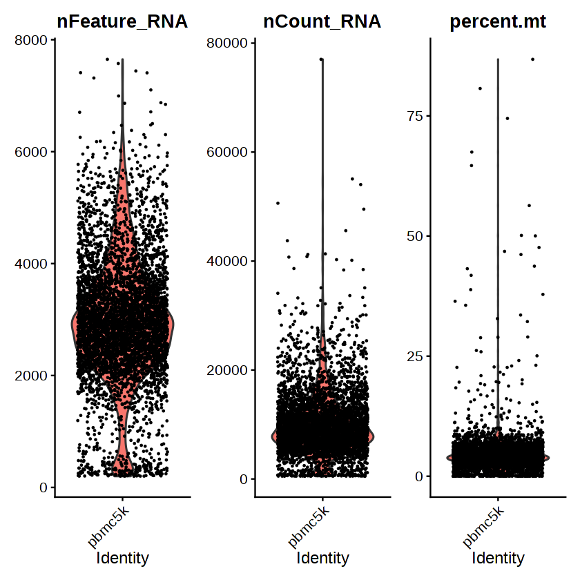
How to read the Violin Plot
-
Shape: Each violin plot shows the distribution of values for each feature across the cells in your dataset. The shape of the plot indicates the density of cells with particular values for that feature.
Wider sections indicate more cells with those values. Narrow sections indicate fewer cells with those values.
-
Vertical Axis: Represents the range of values for each feature. For instance:
nFeature_RNA and nCount_RNA: Higher values suggest more gene diversity and RNA content, respectively.
percent.mt: Higher values indicate higher mitochondrial content, which may point to stressed or dying cells.
- Horizontal Axis (Groups): If your dataset is separated into clusters or groups (e.g., cell types or conditions), each group will have its own violin, allowing you to compare distributions between groups.
How to interpret QC plot
nFeature_RNA: The number of unique features (genes) detected per cell.
Extremely high values could suggest potential doublets (two cells mistakenly captured as one), as two cells would have more unique genes combined.
Low number of detected genes - potential ambient mRNA (not real cells)
nCount_RNA: The total number of RNA molecules (or unique molecular identifiers, UMIs) detected per cell.
Higher counts generally indicate higher RNA content, but they could also result from cell doublets. Cells with very low nCount_RNA might represent poor-quality cells with low RNA capture, while very high counts may also suggest doublets.
percent.mt: The percentage of reads mapping to mitochondrial genes.
High mitochondrial content often indicates cell stress or apoptosis, as damaged cells tend to release mitochondrial RNA.
Filtering cells with high percent.mt values is common to exclude potentially dying cells.
# FeatureScatter is typically used to visualize feature-feature relationships, but can be used
# for anything calculated by the object, i.e. columns in object metadata, PC scores etc.
plot1 <- FeatureScatter(pbmc, feature1 = "nCount_RNA", feature2 = "percent.mt")
plot2 <- FeatureScatter(pbmc, feature1 = "nCount_RNA", feature2 = "nFeature_RNA")
plot1 + plot2
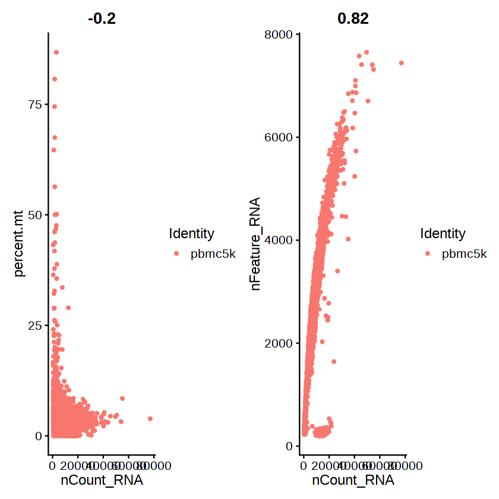
# Load necessary libraries
library(Seurat)
library(ggplot2)
# Define the function to calculate median and MAD values
calculate_thresholds <- function(seurat_obj) {
# Extract relevant columns
nFeature_values <- seurat_obj@meta.data$nFeature_RNA
nCount_values <- seurat_obj@meta.data$nCount_RNA
percent_mt_values <- seurat_obj@meta.data$percent.mt
# Calculate medians and MADs
nFeature_median <- median(nFeature_values, na.rm = TRUE)
nFeature_mad <- mad(nFeature_values, constant = 1, na.rm = TRUE)
nCount_median <- median(nCount_values, na.rm = TRUE)
nCount_mad <- mad(nCount_values, constant = 1, na.rm = TRUE)
percent_mt_median <- median(percent_mt_values, na.rm = TRUE)
percent_mt_mad <- mad(percent_mt_values, constant = 1, na.rm = TRUE)
# Calculate thresholds for horizontal lines
thresholds <- list(
nFeature_upper = nFeature_median + 4 * nFeature_mad,
nFeature_lower = nFeature_median - 4 * nFeature_mad,
nCount_upper = nCount_median + 4 * nCount_mad,
nCount_lower = nCount_median - 4 * nCount_mad,
percent_mt_upper = percent_mt_median + 4 * percent_mt_mad
)
return(thresholds)
}
# Calculate thresholds
thresholds <- calculate_thresholds(pbmc)
thresholds
- $nFeature_upper
- 5243.5
- $nFeature_lower
- 583.5
- $nCount_upper
- 19044
- $nCount_lower
- -1224
- $percent_mt_upper
- 8.44783722411371
vplot1 <- VlnPlot(pbmc, features = c("nFeature_RNA"), ncol = 2) +
geom_hline(yintercept = thresholds$nFeature_upper,
color = "blue", linetype = "solid") +
geom_hline(yintercept = thresholds$nFeature_lower,
color = "blue", linetype = "solid") +
theme(legend.position="none")
vplot2 <- VlnPlot(pbmc, features = c("percent.mt"), ncol = 2) +
geom_hline(yintercept = thresholds$percent_mt_upper,
color = "blue", linetype = "solid") +
theme(legend.position="none")
vplot1 + vplot2
Warning message:
“Default search for "data" layer in "RNA" assay yielded no results; utilizing "counts" layer instead.”
Warning message:
“Default search for "data" layer in "RNA" assay yielded no results; utilizing "counts" layer instead.”
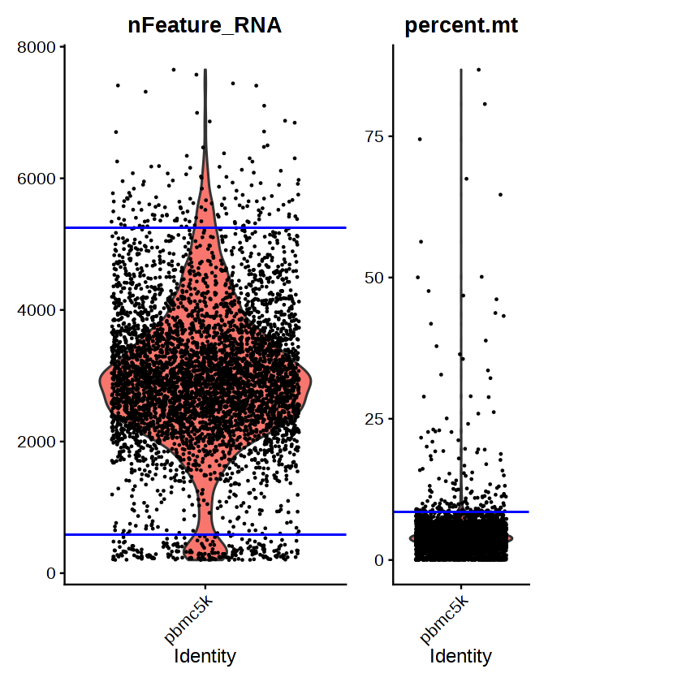
Filter out potential doublets, empty droplets and dying cells
pbmc <- subset(pbmc,
subset = nFeature_RNA > thresholds$nCount_lower &
nFeature_RNA < thresholds$nFeature_upper &
percent.mt < thresholds$percent_mt_upper)
# Use violin plot to visualize QC metrics after QC
# VlnPlot(pbmc,
# features = c("nFeature_RNA", "nCount_RNA", "percent.mt"),
# ncol = 3)
NewVlnPlot(pbmc, col = 3)
Warning message:
“Default search for "data" layer in "RNA" assay yielded no results; utilizing "counts" layer instead.”
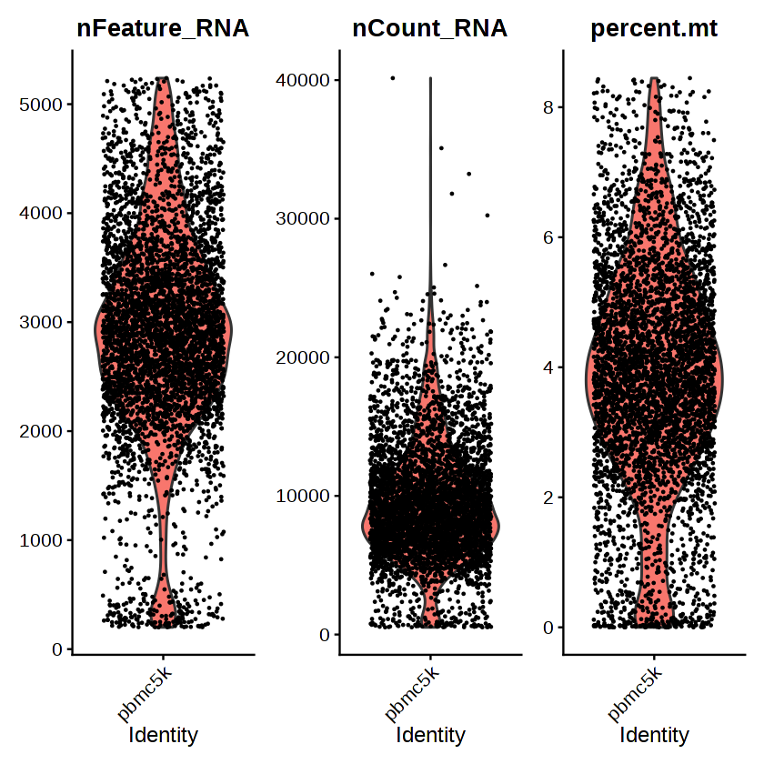
Instead of using an arbitrary number, you can also use statistical algorithm to predict doublets and empty droplets to filter the cells, such as DoubletFinder and EmptyDrops.
Normalization and Scaling of the data
Normalization
After removing unwanted cells from the dataset, the next step is to normalize the data. By default, a global-scaling normalization method “LogNormalize” that normalizes the feature expression measurements for each cell by the total expression, multiplies this by a scale factor (10,000 by default), and log-transforms the result. In Seurat v5, Normalized values are stored in pbmc[["RNA"]]$data.
pbmc <- NormalizeData(pbmc) # normalization.method = "LogNormalize", scale.factor = 10000
Normalizing layer: counts
While this method of normalization is standard and widely used in scRNA-seq analysis, global-scaling relies on an assumption that each cell originally contains the same number of RNA molecules.
Next, we identify a subset of features that show high variation across cells in the dataset—meaning they are highly expressed in some cells and lowly expressed in others. Prior work, including our own, has shown that focusing on these variable genes in downstream analyses can enhance the detection of biological signals in single-cell datasets.
The approach used in Seurat improves upon previous versions by directly modeling the inherent mean-variance relationship in single-cell data. This method is implemented in the FindVariableFeatures() function, which, by default, selects 2,000 variable features per dataset. These features will then be used in downstream analyses, such as PCA.
pbmc <- FindVariableFeatures(pbmc,
selection.method = "vst",
nfeatures = 2000)
Finding variable features for layer counts
# Identify the 10 most highly variable genes
top10 <- head(VariableFeatures(pbmc), 10)
options(repr.plot.width=10, repr.plot.height= 6)
# plot variable features with and without labels
plot1 <- VariableFeaturePlot(pbmc)
plot2 <- LabelPoints(plot = plot1, points = top10, repel = TRUE)
print(plot1)
print(plot2)
When using repel, set xnudge and ynudge to 0 for optimal results
Warning message in scale_x_log10():
“[1m[22m[32mlog-10[39m transformation introduced infinite values.”
Warning message in scale_x_log10():
“[1m[22m[32mlog-10[39m transformation introduced infinite values.”
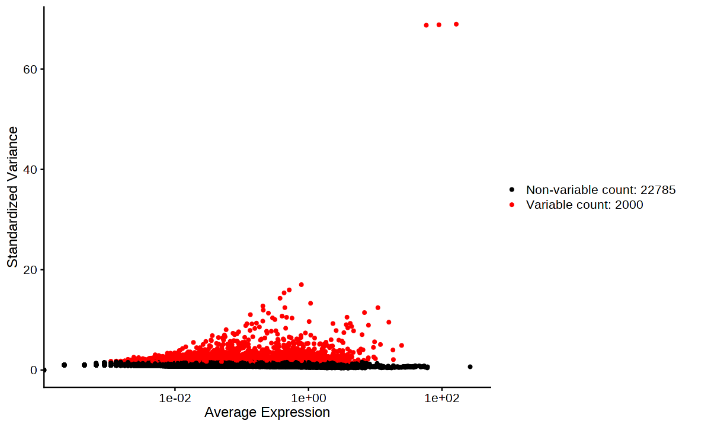
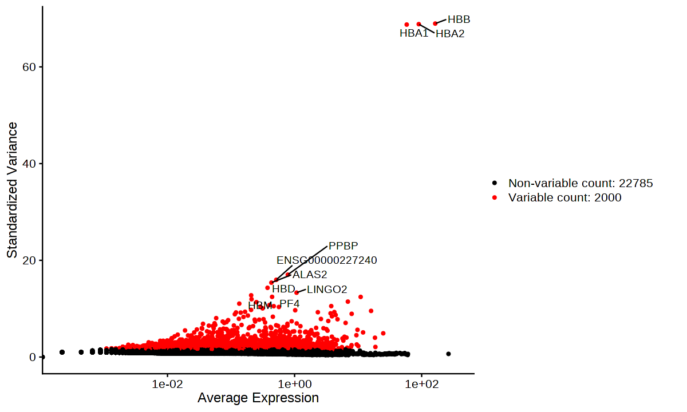
Scaling the data
Next, we apply a linear transformation (scaling) that is a standard pre-processing step prior to dimensional reduction techniques like PCA. The ScaleData() function:
Shifts the expression of each gene, so that the mean expression across cells is 0 Scales the expression of each gene, so that the variance across cells is 1
This step gives equal weight in downstream analyses, so that highly-expressed genes do not dominate
The results of this are stored in pbmc[["RNA"]]$scale.data
By default, only variable features are scaled. You can specify the features argument to scale additional features.
all.genes <- rownames(pbmc)
pbmc <- ScaleData(pbmc, features = all.genes)
Centering and scaling data matrix
Perform linear dimensional reduction
pbmc <- RunPCA(pbmc, features = VariableFeatures(object = pbmc))
PC_ 1
Positive: CD247, IL32, IL7R, RORA, CAMK4, LTB, INPP4B, STAT4, BCL2, ANK3
ZEB1, LEF1, TRBC1, CARD11, THEMIS, BACH2, MLLT3, RNF125, RASGRF2, NR3C2
NELL2, PDE3B, LINC01934, ENSG00000290067, PRKCA, TAFA1, PYHIN1, CTSW, CSGALNACT1, SAMD3
Negative: LYZ, FCN1, IRAK3, SLC8A1, CLEC7A, PLXDC2, IFI30, S100A9, SPI1, CYBB
MNDA, LRMDA, FGL2, VCAN, CTSS, RBM47, CSF3R, MCTP1, NCF2, TYMP
CYRIA, CST3, HCK, SLC11A1, WDFY3, S100A8, MS4A6A, MPEG1, LST1, CSTA
PC_ 2
Positive: CD247, S100A4, STAT4, NKG7, CST7, CTSW, GZMA, SYTL3, RNF125, SAMD3
NCALD, MYO1F, MYBL1, KLRD1, PLCB1, TGFBR3, PRF1, GNLY, RAP1GAP2, RORA
CCL5, HOPX, FGFBP2, YES1, PYHIN1, FNDC3B, GNG2, SYNE1, KLRF1, SPON2
Negative: BANK1, MS4A1, CD79A, FCRL1, PAX5, IGHM, AFF3, LINC00926, NIBAN3, EBF1
IGHD, BLK, CD22, OSBPL10, HLA-DQA1, COL19A1, GNG7, KHDRBS2, RUBCNL, TNFRSF13C
COBLL1, RALGPS2, TCL1A, BCL11A, CDK14, CD79B, PLEKHG1, HLA-DQB1, IGKC, BLNK
PC_ 3
Positive: TUBB1, GP9, GP1BB, PF4, CAVIN2, GNG11, NRGN, PPBP, RGS18, PRKAR2B
H2AC6, ACRBP, PTCRA, TMEM40, TREML1, CLU, LEF1, GPX1, CMTM5, SMANTIS
MPIG6B, CAMK4, MPP1, SPARC, ENSG00000289621, ITGB3, MYL9, MYL4, ITGA2B, F13A1
Negative: NKG7, CST7, GNLY, PRF1, KLRD1, GZMA, KLRF1, MCTP2, GZMB, FGFBP2
HOPX, SPON2, C1orf21, TGFBR3, VAV3, MYBL1, CTSW, SYNE1, NCALD, IL2RB
SAMD3, GNG2, BNC2, CEP78, YES1, RAP1GAP2, PDGFD, LINC02384, CARD11, CLIC3
PC_ 4
Positive: CAMK4, INPP4B, IL7R, LEF1, PRKCA, PDE3B, MAML2, LTB, ANK3, PLCL1
BCL2, CDC14A, THEMIS, FHIT, NELL2, VIM, ENSG00000290067, MLLT3, TSHZ2, NR3C2
IL32, CMTM8, ENSG00000249806, ZEB1, SESN3, CSGALNACT1, TAFA1, LEF1-AS1, SLC16A10, LDLRAD4
Negative: GP1BB, GP9, TUBB1, PF4, CAVIN2, GNG11, PPBP, H2AC6, PTCRA, NRGN
ACRBP, TMEM40, PRKAR2B, RGS18, TREML1, MPIG6B, SMANTIS, CMTM5, CLU, SPARC
ITGA2B, ITGB3, ENSG00000289621, MYL9, CAPN1-AS1, MYL4, ENSG00000288758, DAB2, PDGFA-DT, CTTN
PC_ 5
Positive: CDKN1C, HES4, FCGR3A, PELATON, CSF1R, IFITM3, SIGLEC10, TCF7L2, ZNF703, MS4A7
UICLM, ENSG00000287682, NEURL1, RHOC, FMNL2, CKB, FTL, CALHM6, HMOX1, BATF3
ACTB, MYOF, CCDC26, IFITM2, PAPSS2, RRAS, LST1, VMO1, SERPINA1, LRRC25
Negative: LINC02458, AKAP12, CA8, ENSG00000250696, SLC24A3, HDC, IL3RA, EPAS1, ENPP3, OSBPL1A
TRPM6, CCR3, CSF2RB, SEMA3C, THSD7A, ATP10D, DACH1, CRPPA, ATP8B4, TMEM164
ABHD5, CLC, CR1, ITGB8, LIN7A, TAFA2, MBOAT2, GATA2, DAPK2, GCSAML
You have several useful ways to visualize both cells and features that define the PCA, including VizDimReduction(), DimPlot(), and DimHeatmap().
DimPlot(pbmc, reduction = "pca") + NoLegend()
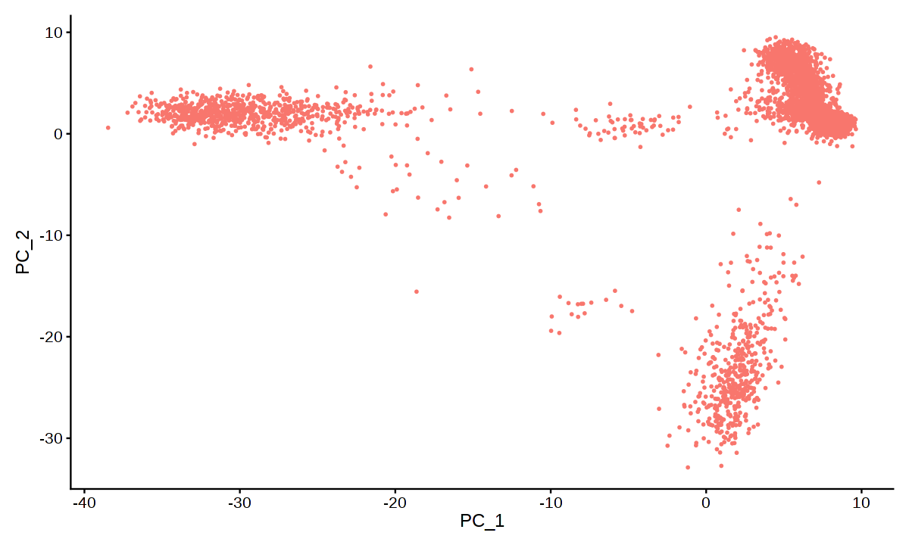
DimHeatmap() draws a heatmap focusing on a principal component. Both cells and genes are sorted by their principal component scores
DimHeatmap(pbmc, dims = 1:3, cells = 500, balanced = TRUE)
DimHeatmap(pbmc, dims = 20:22, cells = 500, balanced = TRUE)


Determine the ‘dimensionality’ of the dataset
The elbow plot is a useful tool for determining the number of principal components (PCs) needed to capture the majority of variation in the data. It displays the standard deviation of each PC, with the "elbow" point typically serving as the threshold for selecting the most informative PCs. However, identifying the exact location of the elbow can be somewhat subjective.
ElbowPlot(pbmc, ndims = 50)
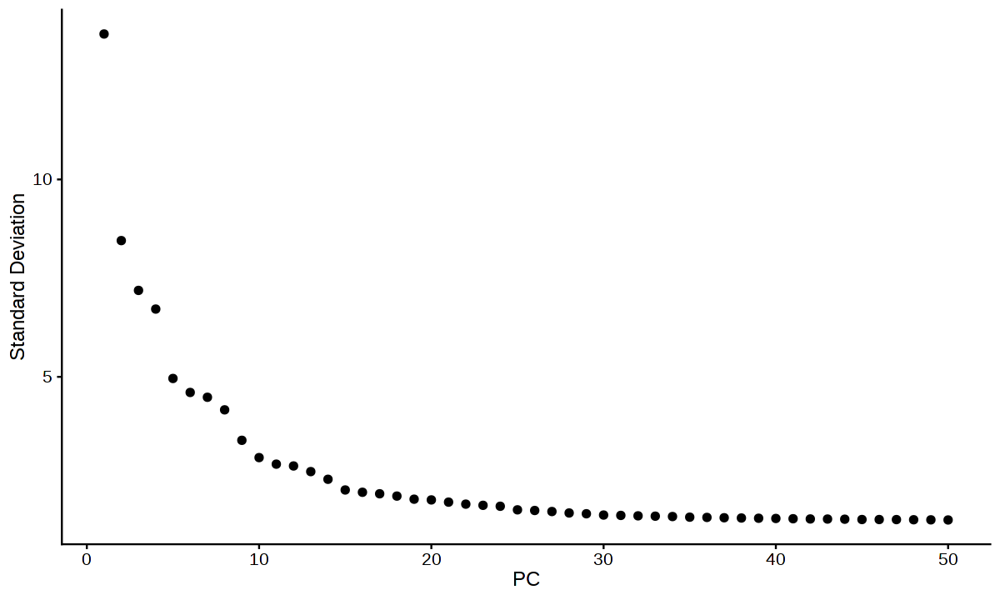
# Determine the percentage of variation associated with each PC
pct_var <- pbmc[["pca"]]@stdev / sum(pbmc[["pca"]]@stdev) * 100
# Calculate cumulative percentages for each PC
cumu_pct <- cumsum(pct_var)
# Identify the first PC where cumulative percentage exceeds 90% and individual variance is less than 5%
pc_number <- which(cumu_pct > 90 & pct_var < 5)[1]
pc_number
41
Cluster the cells
Seurat embeds cells in a graph structure - for example a K-nearest neighbor (KNN) graph, with edges drawn between cells with similar feature expression patterns, and then attempt to partition this graph into highly interconnected quasi-cliques or communities.
Seurat first constructs a KNN graph based on the euclidean distance in PCA space, and refine the edge weights between any two cells based on the shared overlap in their local neighborhoods (Jaccard similarity). This step is performed using the FindNeighbors() function, and takes as input the previously defined dimensionality of the dataset.
To cluster the cells, Seurat next applies modularity optimization techniques such as the Louvain algorithm (default) or SLM [SLM, Blondel et al., Journal of Statistical Mechanics], to iteratively group cells together, with the goal of optimizing the standard modularity function. The FindClusters() function implements this procedure, and contains a resolution parameter that sets the granularity of the downstream clustering, with increased values leading to a greater number of clusters. We find that setting this parameter between 1 typically returns good results for single-cell datasets of around 5k cells. Optimal resolution often increases for larger datasets. The clusters can be found using the Idents() function.
pbmc <- FindNeighbors(pbmc, dims = 1:pc_number)
pbmc <- FindClusters(pbmc, resolution = 0.2)
Computing nearest neighbor graph
Computing SNN
Modularity Optimizer version 1.3.0 by Ludo Waltman and Nees Jan van Eck
Number of nodes: 4559
Number of edges: 184776
Running Louvain algorithm...
Maximum modularity in 10 random starts: 0.9568
Number of communities: 12
Elapsed time: 0 seconds
# Look at cluster IDs of the first 5 cells
head(Idents(pbmc), 5)
- AAACCCATCAGATGCT-1
- 0
- AAACGAAAGTGCTACT-1
- 1
- AAACGAAGTCGTAATC-1
- 8
- AAACGAAGTTGCCAAT-1
- 6
- AAACGAATCCGAGGCT-1
- 4
Levels:
- '0'
- '1'
- '2'
- '3'
- '4'
- '5'
- '6'
- '7'
- '8'
- '9'
- '10'
- '11'
Run non-linear dimensional reduction (UMAP/tSNE)
To visualize and explore these datasets, Seurat offers several non-linear dimensional reduction techniques, such as tSNE and UMAP.
The goal of tSNE/UMAP is to learn underlying structure in the dataset, in order to place similar cells together in low-dimensional space. Therefore, cells that are grouped together within graph-based clusters determined above should co-localize on these dimension reduction plots.
pbmc <- RunUMAP(pbmc, dims = 1:pc_number)
Warning message:
“The default method for RunUMAP has changed from calling Python UMAP via reticulate to the R-native UWOT using the cosine metric
To use Python UMAP via reticulate, set umap.method to 'umap-learn' and metric to 'correlation'
This message will be shown once per session”
02:29:57 UMAP embedding parameters a = 0.9922 b = 1.112
02:29:57 Read 4559 rows and found 41 numeric columns
02:29:57 Using Annoy for neighbor search, n_neighbors = 30
02:29:57 Building Annoy index with metric = cosine, n_trees = 50
0% 10 20 30 40 50 60 70 80 90 100%
[----|----|----|----|----|----|----|----|----|----|
*
*
*
*
*
*
*
*
*
*
*
*
*
*
*
*
*
*
*
*
*
*
*
*
*
*
*
*
*
*
*
*
*
*
*
*
*
*
*
*
*
*
*
*
*
*
*
*
*
*
|
02:29:58 Writing NN index file to temp file /tmp/Rtmp3eevui/file1b11856069c
02:29:58 Searching Annoy index using 1 thread, search_k = 3000
02:30:00 Annoy recall = 100%
02:30:01 Commencing smooth kNN distance calibration using 1 thread
with target n_neighbors = 30
02:30:03 Found 2 connected components,
falling back to 'spca' initialization with init_sdev = 1
02:30:03 Using 'irlba' for PCA
02:30:03 PCA: 2 components explained 46.09% variance
02:30:03 Scaling init to sdev = 1
02:30:03 Commencing optimization for 500 epochs, with 188320 positive edges
02:30:03 Using rng type: pcg
02:30:11 Optimization finished
DimPlot(pbmc, reduction = "umap")

Finding differentially expressed features (cluster biomarkers)
# find markers for every cluster compared to all remaining cells, report only the positive
# ones
pbmc.markers <- FindAllMarkers(pbmc, only.pos = TRUE)
pbmc.markers %>%
group_by(cluster) %>%
dplyr::filter(avg_log2FC > 1)
Calculating cluster 0
Warning message:
“[1m[22mThe `slot` argument of `GetAssayData()` is deprecated as of SeuratObject 5.0.0.
[36mℹ[39m Please use the `layer` argument instead.
[36mℹ[39m The deprecated feature was likely used in the [34mSeurat[39m package.
Please report the issue at [3m[34m<https://github.com/satijalab/seurat/issues>[39m[23m.”
Calculating cluster 1
Calculating cluster 2
Calculating cluster 3
Calculating cluster 4
Calculating cluster 5
Calculating cluster 6
Calculating cluster 7
Calculating cluster 8
Calculating cluster 9
Calculating cluster 10
Calculating cluster 11
| p_val | avg_log2FC | pct.1 | pct.2 | p_val_adj | cluster | gene |
|---|---|---|---|---|---|---|
| <dbl> | <dbl> | <dbl> | <dbl> | <dbl> | <fct> | <chr> |
| 0.000000e+00 | 2.612691 | 0.944 | 0.313 | 0.000000e+00 | 0 | FHIT |
| 0.000000e+00 | 2.516684 | 0.952 | 0.254 | 0.000000e+00 | 0 | LEF1 |
| 0.000000e+00 | 2.237676 | 0.935 | 0.304 | 0.000000e+00 | 0 | PRKCQ-AS1 |
| 0.000000e+00 | 1.184164 | 0.998 | 0.940 | 0.000000e+00 | 0 | RPS3A |
| 2.242224e-316 | 1.149238 | 0.998 | 0.933 | 5.557352e-312 | 0 | RPS13 |
| 6.085058e-316 | 1.088689 | 0.998 | 0.948 | 1.508182e-311 | 0 | RPS14 |
| 8.659285e-311 | 1.094210 | 0.999 | 0.948 | 2.146204e-306 | 0 | RPL30 |
| 2.055343e-308 | 1.086214 | 0.999 | 0.944 | 5.094168e-304 | 0 | RPL34 |
| 2.282344e-307 | 1.099268 | 0.998 | 0.938 | 5.656789e-303 | 0 | RPL9 |
| 8.931130e-306 | 1.991463 | 0.976 | 0.360 | 2.213581e-301 | 0 | CAMK4 |
| 1.918803e-305 | 1.036297 | 0.999 | 0.960 | 4.755752e-301 | 0 | RPL21 |
| 1.396057e-302 | 1.154045 | 0.998 | 0.945 | 3.460128e-298 | 0 | RPL32 |
| 7.395468e-297 | 1.153411 | 0.997 | 0.939 | 1.832967e-292 | 0 | RPS6 |
| 3.766783e-296 | 1.148444 | 0.999 | 0.966 | 9.335970e-292 | 0 | RPS12 |
| 7.405330e-296 | 1.058430 | 0.999 | 0.947 | 1.835411e-291 | 0 | RPL35A |
| 6.849496e-295 | 1.108384 | 0.998 | 0.938 | 1.697647e-290 | 0 | RPS25 |
| 5.810357e-294 | 1.039329 | 0.998 | 0.935 | 1.440097e-289 | 0 | RPS23 |
| 3.301385e-293 | 2.280375 | 0.819 | 0.199 | 8.182482e-289 | 0 | MAL |
| 1.125193e-291 | 1.923380 | 0.980 | 0.457 | 2.788792e-287 | 0 | PRKCA |
| 1.551987e-289 | 1.021773 | 1.000 | 0.943 | 3.846601e-285 | 0 | RPS15A |
| 3.591209e-289 | 1.039366 | 0.998 | 0.929 | 8.900811e-285 | 0 | RPS16 |
| 2.927609e-288 | 1.010351 | 0.997 | 0.935 | 7.256080e-284 | 0 | RPL7 |
| 1.236189e-286 | 1.000003 | 0.998 | 0.947 | 3.063895e-282 | 0 | RPS27A |
| 2.934025e-286 | 1.031792 | 0.998 | 0.943 | 7.271982e-282 | 0 | RPL11 |
| 3.006967e-286 | 1.078095 | 0.998 | 0.927 | 7.452768e-282 | 0 | RPS20 |
| 4.044675e-285 | 1.094725 | 0.998 | 0.924 | 1.002473e-280 | 0 | RPL22 |
| 2.179611e-283 | 3.093953 | 0.643 | 0.110 | 5.402167e-279 | 0 | TSHZ2 |
| 1.224196e-280 | 1.028954 | 0.998 | 0.937 | 3.034170e-276 | 0 | RPL38 |
| 1.691321e-280 | 2.519016 | 0.739 | 0.168 | 4.191939e-276 | 0 | CCR7 |
| 2.787511e-279 | 1.000468 | 0.998 | 0.951 | 6.908846e-275 | 0 | RPS27 |
| ⋮ | ⋮ | ⋮ | ⋮ | ⋮ | ⋮ | ⋮ |
| 0.009116629 | 3.631680 | 0.021 | 0.002 | 1 | 11 | H4C1 |
| 0.009116629 | 3.608558 | 0.021 | 0.002 | 1 | 11 | ENSG00000289291 |
| 0.009116629 | 3.605235 | 0.021 | 0.002 | 1 | 11 | VAMP1-AS1 |
| 0.009116629 | 3.591495 | 0.021 | 0.002 | 1 | 11 | ENSG00000249328 |
| 0.009116629 | 3.567020 | 0.021 | 0.002 | 1 | 11 | ERICH2-DT |
| 0.009116629 | 3.550000 | 0.021 | 0.002 | 1 | 11 | NLRP10 |
| 0.009116629 | 3.518027 | 0.021 | 0.002 | 1 | 11 | ENSG00000270087 |
| 0.009116629 | 3.496166 | 0.021 | 0.002 | 1 | 11 | ENSG00000253593 |
| 0.009116629 | 3.393207 | 0.021 | 0.002 | 1 | 11 | ADAM11 |
| 0.009116629 | 3.272524 | 0.021 | 0.002 | 1 | 11 | ENSG00000228150 |
| 0.009116629 | 3.266281 | 0.021 | 0.002 | 1 | 11 | LINC03065 |
| 0.009116629 | 3.221456 | 0.021 | 0.002 | 1 | 11 | STARD13-AS |
| 0.009116629 | 3.109640 | 0.021 | 0.002 | 1 | 11 | FGGY-DT |
| 0.009116629 | 2.116185 | 0.021 | 0.002 | 1 | 11 | ENSG00000285751 |
| 0.009353183 | 1.486986 | 0.146 | 0.057 | 1 | 11 | TRPM2 |
| 0.009560927 | 1.198107 | 0.083 | 0.024 | 1 | 11 | SYCP3 |
| 0.009563781 | 1.367524 | 0.062 | 0.015 | 1 | 11 | MAP7 |
| 0.009595402 | 1.283987 | 0.083 | 0.024 | 1 | 11 | PPP1R13L |
| 0.009686754 | 2.584749 | 0.042 | 0.008 | 1 | 11 | PRRG2 |
| 0.009706714 | 2.407445 | 0.042 | 0.008 | 1 | 11 | LINC02185 |
| 0.009746744 | 2.473951 | 0.042 | 0.008 | 1 | 11 | LINC02901 |
| 0.009766814 | 2.300928 | 0.042 | 0.008 | 1 | 11 | WNK3 |
| 0.009766814 | 1.640083 | 0.042 | 0.008 | 1 | 11 | CALCRL-AS1 |
| 0.009786921 | 2.434878 | 0.042 | 0.008 | 1 | 11 | ENSG00000272112 |
| 0.009786922 | 2.438294 | 0.042 | 0.008 | 1 | 11 | ENSG00000277589 |
| 0.009847464 | 2.262934 | 0.042 | 0.008 | 1 | 11 | PCDH15 |
| 0.009847464 | 2.064514 | 0.042 | 0.008 | 1 | 11 | CIBAR1 |
| 0.009888011 | 2.173570 | 0.042 | 0.008 | 1 | 11 | SEZ6 |
| 0.009908340 | 1.746860 | 0.042 | 0.008 | 1 | 11 | RTKN |
| 0.009993542 | 1.340809 | 0.146 | 0.059 | 1 | 11 | ENSG00000287100 |
# find all markers distinguishing cluster 5 from clusters 0 and 3
cluster5.markers <- FindMarkers(pbmc, ident.1 = 5, ident.2 = c(0, 3))
head(cluster5.markers, n = 5)
| p_val | avg_log2FC | pct.1 | pct.2 | p_val_adj | |
|---|---|---|---|---|---|
| <dbl> | <dbl> | <dbl> | <dbl> | <dbl> | |
| CST7 | 0.000000e+00 | 8.454013 | 0.946 | 0.010 | 0.000000e+00 |
| GZMA | 0.000000e+00 | 7.631713 | 0.950 | 0.019 | 0.000000e+00 |
| NKG7 | 0.000000e+00 | 7.541945 | 0.991 | 0.064 | 0.000000e+00 |
| CCL5 | 0.000000e+00 | 7.416700 | 0.989 | 0.053 | 0.000000e+00 |
| MYBL1 | 2.644088e-288 | 5.930514 | 0.853 | 0.055 | 6.553373e-284 |
VlnPlot(pbmc, features = c("PTPRK", "NRCAM"))
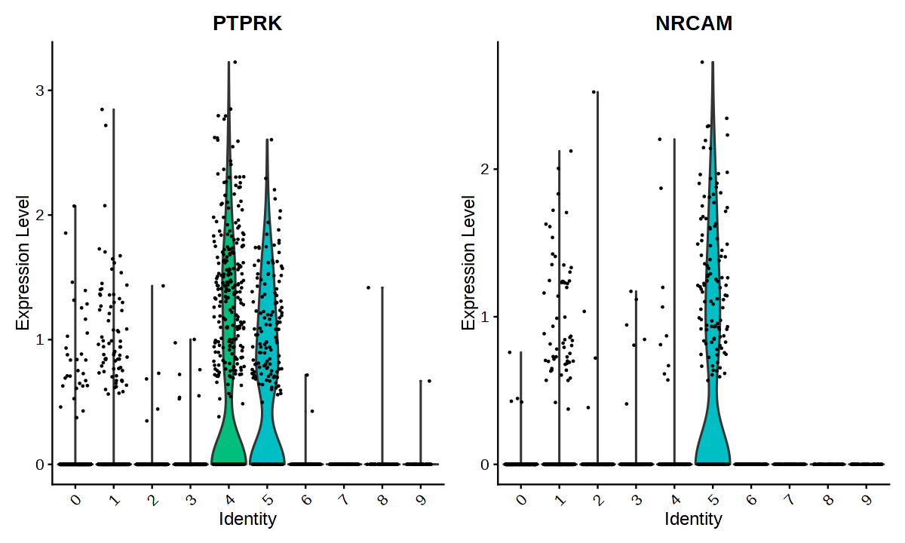
VlnPlot(pbmc, features = c("NKG7", "PF4"), slot = "counts", log = TRUE)
Warning message:
“[1m[22mThe `slot` argument of `VlnPlot()` is deprecated as of Seurat 5.0.0.
[36mℹ[39m Please use the `layer` argument instead.”
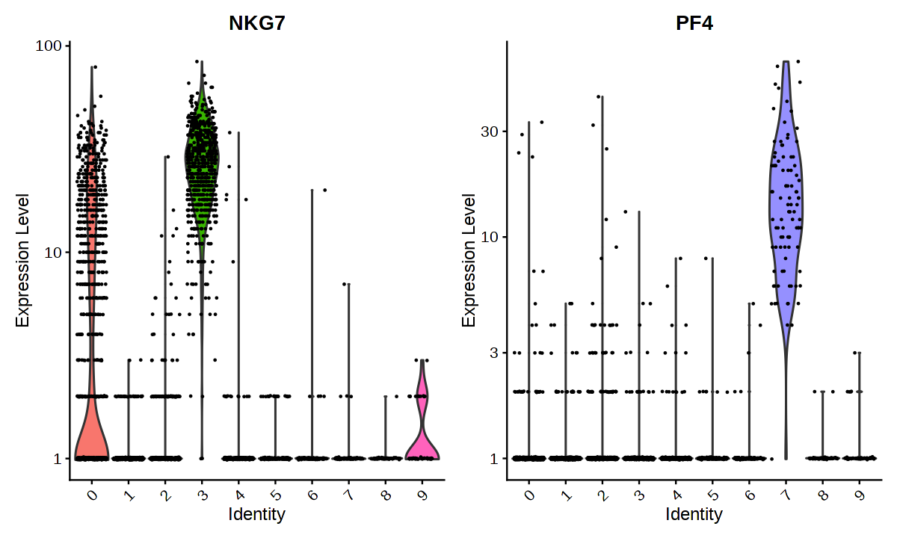
FeaturePlot(pbmc, features = c("MS4A1", "GNLY", "CD3E", "CD14", "FCER1A", "FCGR3A", "LYZ", "PPBP",
"CD8A"))
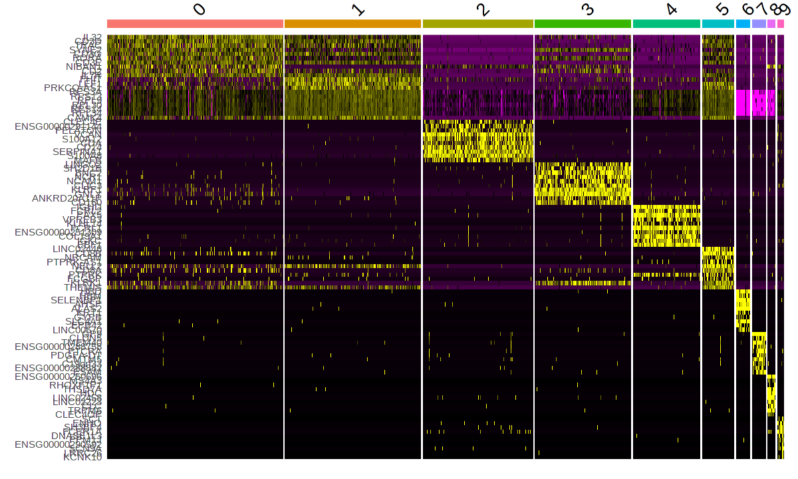
pbmc.markers %>%
group_by(cluster) %>%
dplyr::filter(avg_log2FC > 1) %>%
slice_head(n = 10) %>%
ungroup() -> top10
DoHeatmap(pbmc, features = top10$gene) + NoLegend()
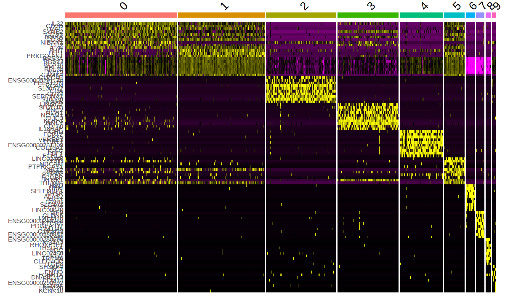
Cell type annotation using SingleR
library(SingleCellExperiment )
sce <- as.SingleCellExperiment(pbmc)
sce <- scater::logNormCounts(sce)
Found more than one class "package_version" in cache; using the first, from namespace 'SeuratObject'
Also defined by ‘alabaster.base’
Found more than one class "package_version" in cache; using the first, from namespace 'SeuratObject'
Also defined by ‘alabaster.base’
Found more than one class "package_version" in cache; using the first, from namespace 'SeuratObject'
Also defined by ‘alabaster.base’
Found more than one class "package_version" in cache; using the first, from namespace 'SeuratObject'
Also defined by ‘alabaster.base’
Found more than one class "package_version" in cache; using the first, from namespace 'SeuratObject'
Also defined by ‘alabaster.base’
Found more than one class "package_version" in cache; using the first, from namespace 'SeuratObject'
Also defined by ‘alabaster.base’
sce
Found more than one class "package_version" in cache; using the first, from namespace 'SeuratObject'
Also defined by ‘alabaster.base’
Found more than one class "package_version" in cache; using the first, from namespace 'SeuratObject'
Also defined by ‘alabaster.base’
class: SingleCellExperiment
dim: 24785 4559
metadata(0):
assays(3): counts logcounts scaledata
rownames(24785): ENSG00000238009 ENSG00000241860 ... ENSG00000276345
ENSG00000278817
rowData names(0):
colnames(4559): AAACCCATCAGATGCT-1 AAACGAAAGTGCTACT-1 ...
TTTGTTGTCGAAGTGG-1 TTTGTTGTCGCATAGT-1
colData names(8): orig.ident nCount_RNA ... ident sizeFactor
reducedDimNames(2): PCA UMAP
mainExpName: RNA
altExpNames(0):
# Download and cache the normalized expression values of the data
# stored in the Human Primary Cell Atlas. The data will be
# downloaded from ExperimentHub, returning a SummarizedExperiment
# object for further use.
hpca <- HumanPrimaryCellAtlasData()
# Obtain human bulk RNA-seq data from Blueprint and ENCODE
blueprint <- BlueprintEncodeData()
pred.hpca <- SingleR(test = sce,
ref = hpca, labels = hpca$label.main)
tab_hpca <- table(pred.hpca$pruned.labels)
write.csv(sort(tab_hpca, decreasing=TRUE), 'pbmc_annotations_HPCA_general.csv', row.names=FALSE)
tab_hpca
B_cell BM DC Endothelial_cells
451 30 1 1
Erythroblast GMP HSC_-G-CSF HSC_CD34+
60 2 11 1
Monocyte Neutrophils NK_cell Platelets
759 39 677 93
Pre-B_cell_CD34- T_cells
2 2350
Each row of the output DataFrame contains prediction results for a single cell. Labels are shown before (labels) and after pruning (pruned.labels), along with the associated scores.
head(pred.hpca)
DataFrame with 6 rows and 4 columns
scores labels delta.next
<matrix> <character> <numeric>
AAACCCATCAGATGCT-1 0.1409902:0.3257687:0.281000:... T_cells 0.0708860
AAACGAAAGTGCTACT-1 0.1407268:0.3072562:0.264148:... T_cells 0.6026772
AAACGAAGTCGTAATC-1 0.0604399:0.0725122:0.184863:... Erythroblast 0.1268946
AAACGAAGTTGCCAAT-1 0.1585486:0.3228307:0.278787:... T_cells 0.6492489
AAACGAATCCGAGGCT-1 0.1166524:0.3565152:0.277855:... B_cell 0.0505309
AAACGAATCGAACGCC-1 0.1437411:0.3427680:0.299201:... NK_cell 0.3155681
pruned.labels
<character>
AAACCCATCAGATGCT-1 T_cells
AAACGAAAGTGCTACT-1 T_cells
AAACGAAGTCGTAATC-1 Erythroblast
AAACGAAGTTGCCAAT-1 T_cells
AAACGAATCCGAGGCT-1 B_cell
AAACGAATCGAACGCC-1 NK_cell
pred.blueprint <- SingleR(test = sce,
ref = blueprint, labels = blueprint$label.main)
tab_blueprint <- table(pred.blueprint$pruned.labels)
write.csv(sort(tab_blueprint, decreasing=TRUE), 'pbmc_annotations_BlueprintENCODE_general.csv', row.names=FALSE)
tab_blueprint
B-cells CD4+ T-cells CD8+ T-cells DC
455 1749 576 3
Endothelial cells Eosinophils Erythrocytes HSC
1 50 128 4
Monocytes Neutrophils NK cells
768 3 692
head(pred.blueprint)
DataFrame with 6 rows and 4 columns
scores labels delta.next
<matrix> <character> <numeric>
AAACCCATCAGATGCT-1 0.2145648:0.1136181:0.437872:... CD4+ T-cells 0.0512150
AAACGAAAGTGCTACT-1 0.2311086:0.1664737:0.393066:... CD4+ T-cells 0.3283657
AAACGAAGTCGTAATC-1 0.0977069:0.0728724:0.100641:... Erythrocytes 0.0757261
AAACGAAGTTGCCAAT-1 0.2289000:0.1565938:0.423090:... CD8+ T-cells 0.0620951
AAACGAATCCGAGGCT-1 0.2353403:0.1291495:0.500443:... B-cells 0.1276654
AAACGAATCGAACGCC-1 0.2308036:0.1288775:0.417440:... NK cells 0.1486502
pruned.labels
<character>
AAACCCATCAGATGCT-1 CD4+ T-cells
AAACGAAAGTGCTACT-1 CD4+ T-cells
AAACGAAGTCGTAATC-1 Erythrocytes
AAACGAAGTTGCCAAT-1 CD8+ T-cells
AAACGAATCCGAGGCT-1 B-cells
AAACGAATCGAACGCC-1 NK cells
pbmc$singleR_hpca = pred.hpca$pruned.labels
pbmc$singleR_blueprint = pred.blueprint$pruned.labels
Idents(pbmc) = pbmc$singleR_hpca
DimPlot(pbmc, reduction = "umap",
label = TRUE, pt.size = 0.5,
repel = TRUE) + NoLegend()
# Change back to cluster snn_res.0.1
Idents(pbmc) = pbmc$`RNA_snn_res.0.2`
Idents(pbmc) = pbmc$singleR_blueprint
DimPlot(pbmc, reduction = "umap",
label = TRUE, pt.size = 0.5,
repel = TRUE) + NoLegend()
# Change back to cluster snn_res.0.2
Idents(pbmc) = pbmc$`RNA_snn_res.0.2`
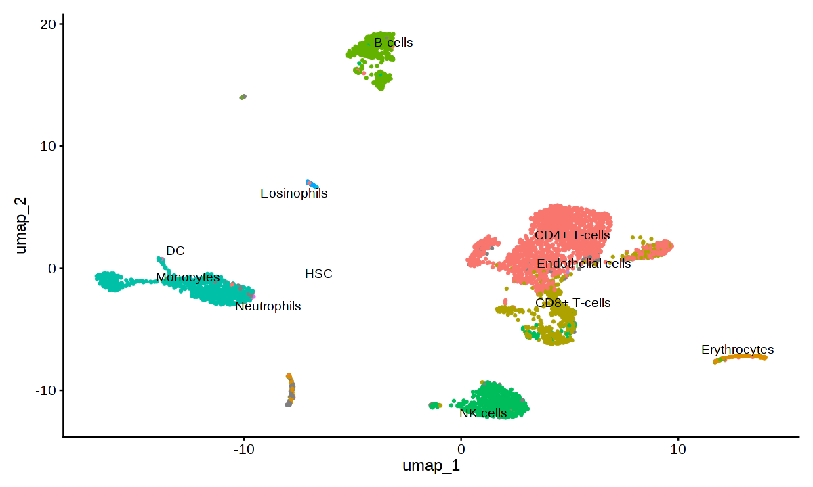
Manual annotation
| Markers | Cell Type |
|---|---|
| IL7R, CCR7 | Naive CD4+ T |
| CD14, LYZ | CD14+ Mono |
| IL7R, S100A4 | Memory CD4+ |
| MS4A1 | B |
| CD8A | CD8+ T |
| FCGR3A, MS4A7 | FCGR3A+ Mono |
| GNLY, NKG7 | NK |
| FCER1A, CST3 | DC |
| PPBP | Platelet |
table(Idents(pbmc))
0 1 2 3 4 5 6 7 8 9 10 11
934 777 662 604 465 442 224 157 98 94 54 48
options(repr.plot.width=12, repr.plot.height= 10)
FeaturePlot(pbmc, features = c("IL7R", "CCR7", "CD14", "LYZ", "S100A4", "MS4A1"))
# CD8A CD8+ T
# FCGR3A, MS4A7 FCGR3A+ Mono
# GNLY, NKG7 NK
# FCER1A, CST3 DC
# PPBP Platelet
FeaturePlot(pbmc, features = c("CD8A", "GNLY", "FCGR3A", "MS4A7", "GNLY", "NKG7", "FCER1A", "CST3", "PPBP"))
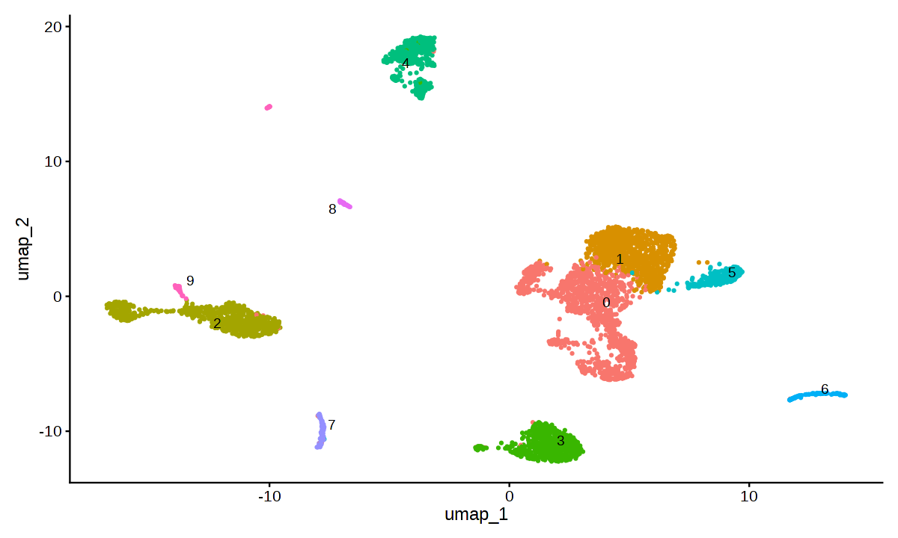
options(repr.plot.width=8, repr.plot.height= 8)
DimPlot(pbmc, reduction = "umap",
label = TRUE, pt.size = 0.5,
repel = TRUE) + NoLegend()
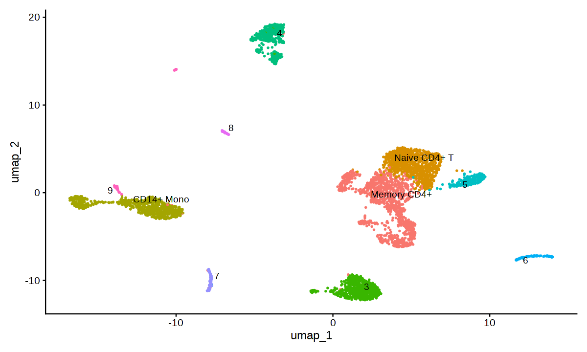
pbmc = RenameIdents(pbmc, "0"="Naive CD4+ T")
pbmc = RenameIdents(pbmc, "3"="CD14+ Mono")
pbmc = RenameIdents(pbmc, "1"="Memory CD4+")
pbmc = RenameIdents(pbmc, "5"="Memory CD4+")
### Add more manual annotation based on your checking
options(repr.plot.width=8, repr.plot.height= 8)
DimPlot(pbmc, reduction = "umap",
label = TRUE, pt.size = 0.5,
repel = TRUE) + NoLegend()

Save the Seurat object
saveRDS(pbmc, file = "Seurat_object_pbmc_final.rds")
Found more than one class "package_version" in cache; using the first, from namespace 'SeuratObject'
Also defined by ‘alabaster.base’
Found more than one class "package_version" in cache; using the first, from namespace 'SeuratObject'
Also defined by ‘alabaster.base’
Use Loupe Browser to visualize and analyze the data
Loupe Browser is a powerful visualization software that provides the intuitive functionality you need to explore and analyze your 10x Genomics Chromium and Visium data. You can also convert your Seurat objects into Loupe Browser files using the LoupeR package.
Step 1: convert the seurat object to cloupe file
10x Genomics' LoupeR is an R package that works with Seurat objects to create a Loupe Browser file. The Loupe Browser file can then be imported into Loupe Browser (v7.0 or later) for data visualization and further exploration.
#remotes::install_github("10xGenomics/loupeR")
#loupeR::setup()
library(loupeR)
Warning message in fun(libname, pkgname):
“Please call `loupeR::setup()` to install the Louper executable and to agree to the EULA before continuing”
loupeR::setup()
Installing Executable
2025/12/06 03:16:13 Downloading executable
The LoupeR executable is subject to the 10x End User Software License, available at:
https://10xgen.com/EULA
Do you accept the End-User License Agreement
(y/yes or n/no): yes
EULA
create_loupe_from_seurat(pbmc, output_name = "Seurat_object_pbmc_cloupe")
2025/12/06 03:16:18 extracting matrix, clusters, and projections
2025/12/06 03:16:19 selected assay: RNA
2025/12/06 03:16:19 selected clusters: active_cluster orig.ident RNA_snn_res.0.2 seurat_clusters singleR_hpca singleR_blueprint
2025/12/06 03:16:19 selected projections: umap
2025/12/06 03:16:19 validating count matrix
2025/12/06 03:16:19 validating clusters
2025/12/06 03:16:19 validating projections
2025/12/06 03:16:19 creating temporary hdf5 file: /tmp/Rtmp3eevui/file1b12091afba.h5
2025/12/06 03:16:24 invoking louper executable
2025/12/06 03:16:24 running command: "/root/.local/share/R/loupeR/louper create --input='/tmp/Rtmp3eevui/file1b12091afba.h5' --output='Seurat_object_pbmc_cloupe.cloupe'"
Step 2: Load the cloupe file into Loupe Browser
Loupe Browser can be downloaded via the link below:
https://www.10xgenomics.com/support/software/loupe-browser/downloads
sessionInfo()
R version 4.5.2 (2025-10-31)
Platform: x86_64-pc-linux-gnu
Running under: Ubuntu 22.04.4 LTS
Matrix products: default
BLAS: /usr/lib/x86_64-linux-gnu/openblas-pthread/libblas.so.3
LAPACK: /usr/lib/x86_64-linux-gnu/openblas-pthread/libopenblasp-r0.3.20.so; LAPACK version 3.10.0
locale:
[1] LC_CTYPE=en_US.UTF-8 LC_NUMERIC=C
[3] LC_TIME=en_US.UTF-8 LC_COLLATE=en_US.UTF-8
[5] LC_MONETARY=en_US.UTF-8 LC_MESSAGES=en_US.UTF-8
[7] LC_PAPER=en_US.UTF-8 LC_NAME=C
[9] LC_ADDRESS=C LC_TELEPHONE=C
[11] LC_MEASUREMENT=en_US.UTF-8 LC_IDENTIFICATION=C
time zone: Etc/UTC
tzcode source: system (glibc)
attached base packages:
[1] stats4 stats graphics grDevices utils datasets methods
[8] base
other attached packages:
[1] loupeR_1.1.4 future_1.68.0
[3] scater_1.38.0 ggplot2_4.0.1
[5] scuttle_1.20.0 SingleCellExperiment_1.32.0
[7] celldex_1.20.0 SingleR_2.12.0
[9] SummarizedExperiment_1.40.0 Biobase_2.70.0
[11] GenomicRanges_1.62.0 Seqinfo_1.0.0
[13] IRanges_2.44.0 S4Vectors_0.48.0
[15] BiocGenerics_0.56.0 generics_0.1.4
[17] MatrixGenerics_1.22.0 matrixStats_1.5.0
[19] dplyr_1.1.4 Seurat_5.0.0
[21] SeuratObject_5.2.0 sp_2.2-0
loaded via a namespace (and not attached):
[1] RcppAnnoy_0.0.22 splines_4.5.2
[3] later_1.4.4 pbdZMQ_0.3-14
[5] filelock_1.0.3 tibble_3.3.0
[7] polyclip_1.10-7 fastDummies_1.7.5
[9] lifecycle_1.0.4 httr2_1.2.1
[11] hdf5r_1.3.12 globals_0.18.0
[13] lattice_0.22-7 MASS_7.3-65
[15] alabaster.base_1.10.0 magrittr_2.0.4
[17] limma_3.66.0 plotly_4.11.0
[19] yaml_2.3.10 httpuv_1.6.16
[21] otel_0.2.0 sctransform_0.4.2
[23] spam_2.11-1 spatstat.sparse_3.1-0
[25] reticulate_1.44.1 cowplot_1.2.0
[27] pbapply_1.7-4 DBI_1.2.3
[29] RColorBrewer_1.1-3 abind_1.4-8
[31] Rtsne_0.17 presto_1.0.0
[33] purrr_1.2.0 rappdirs_0.3.3
[35] ggrepel_0.9.6 irlba_2.3.5.1
[37] listenv_0.10.0 spatstat.utils_3.2-0
[39] goftest_1.2-3 RSpectra_0.16-2
[41] spatstat.random_3.4-2 fitdistrplus_1.2-4
[43] parallelly_1.45.1 DelayedMatrixStats_1.32.0
[45] leiden_0.4.3.1 codetools_0.2-20
[47] DelayedArray_0.36.0 tidyselect_1.2.1
[49] farver_2.1.2 viridis_0.6.5
[51] ScaledMatrix_1.18.0 BiocFileCache_3.0.0
[53] base64enc_0.1-3 spatstat.explore_3.5-3
[55] jsonlite_2.0.0 BiocNeighbors_2.4.0
[57] progressr_0.18.0 ggridges_0.5.7
[59] survival_3.8-3 systemfonts_1.3.1
[61] tools_4.5.2 ragg_1.5.0
[63] ica_1.0-3 Rcpp_1.1.0
[65] glue_1.8.0 gridExtra_2.3
[67] SparseArray_1.10.1 IRdisplay_1.1
[69] HDF5Array_1.38.0 gypsum_1.6.0
[71] withr_3.0.2 BiocManager_1.30.27
[73] fastmap_1.2.0 rhdf5filters_1.22.0
[75] rsvd_1.0.5 digest_0.6.39
[77] R6_2.6.1 mime_0.13
[79] textshaping_1.0.4 Cairo_1.7-0
[81] scattermore_1.2 tensor_1.5.1
[83] spatstat.data_3.1-9 RSQLite_2.4.4
[85] h5mread_1.2.0 tidyr_1.3.1
[87] data.table_1.17.8 httr_1.4.7
[89] htmlwidgets_1.6.4 S4Arrays_1.10.0
[91] uwot_0.2.4 pkgconfig_2.0.3
[93] gtable_0.3.6 blob_1.2.4
[95] lmtest_0.9-40 S7_0.2.1
[97] XVector_0.50.0 htmltools_0.5.8.1
[99] dotCall64_1.2 alabaster.matrix_1.10.0
[101] scales_1.4.0 png_0.1-8
[103] spatstat.univar_3.1-5 reshape2_1.4.5
[105] uuid_1.2-1 nlme_3.1-168
[107] curl_7.0.0 rhdf5_2.54.0
[109] repr_1.1.7 zoo_1.8-14
[111] cachem_1.1.0 stringr_1.6.0
[113] BiocVersion_3.22.0 KernSmooth_2.23-26
[115] vipor_0.4.7 parallel_4.5.2
[117] miniUI_0.1.2 AnnotationDbi_1.72.0
[119] ggrastr_1.0.2 alabaster.schemas_1.10.0
[121] pillar_1.11.1 grid_4.5.2
[123] vctrs_0.6.5 RANN_2.6.2
[125] promises_1.5.0 BiocSingular_1.26.0
[127] dbplyr_2.5.1 beachmat_2.26.0
[129] xtable_1.8-4 cluster_2.1.8.1
[131] beeswarm_0.4.0 evaluate_1.0.5
[133] cli_3.6.5 compiler_4.5.2
[135] rlang_1.1.6 crayon_1.5.3
[137] future.apply_1.20.0 labeling_0.4.3
[139] ggbeeswarm_0.7.2 plyr_1.8.9
[141] stringi_1.8.7 alabaster.se_1.10.0
[143] viridisLite_0.4.2 deldir_2.0-4
[145] BiocParallel_1.44.0 Biostrings_2.78.0
[147] lazyeval_0.2.2 spatstat.geom_3.6-0
[149] Matrix_1.7-4 ExperimentHub_3.0.0
[151] IRkernel_1.3.2 RcppHNSW_0.6.0
[153] patchwork_1.3.2 sparseMatrixStats_1.22.0
[155] bit64_4.6.0-1 Rhdf5lib_1.32.0
[157] statmod_1.5.1 KEGGREST_1.50.0
[159] shiny_1.11.1 alabaster.ranges_1.10.0
[161] AnnotationHub_4.0.0 ROCR_1.0-11
[163] igraph_2.2.1 memoise_2.0.1
[165] bit_4.6.0
Reference
https://monashbioinformaticsplatform.github.io/Single-Cell-Workshop/pbmc3k_tutorial.html
https://bioinformatics.ccr.cancer.gov/docs/getting-started-with-scrna-seq/IntroToR_Seurat/
https://hbctraining.github.io/scRNA-seq/lessons/elbow_plot_metric.html